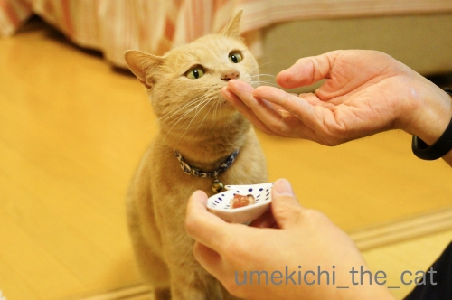
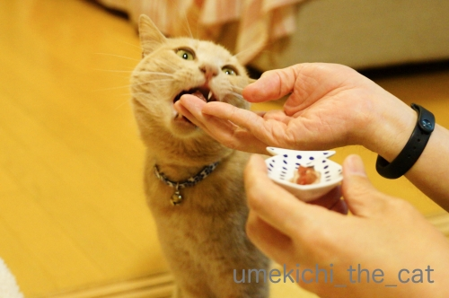
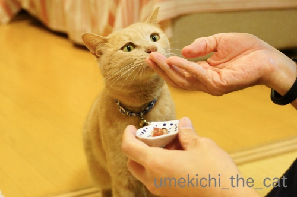
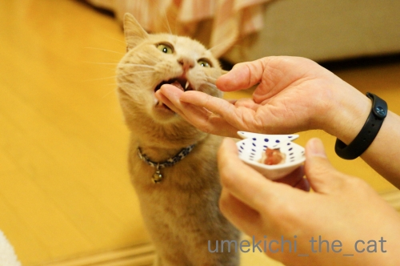

かつお祭り [梅吉]
これ、な〜んだ！

![[猫]](https://blog.ss-blog.jp/_images_e/101.gif) ふんふんふんふん・・・・
ふんふんふんふん・・・・

うま〜い！

梅吉さん、おしっぽぶんぶんですw

お給仕係のおとーさんの指も味わっていると思われますw
それにしても美味しいもの食べる時は悪いお顔になりますねー！(*>艸<)

かつおが大好きなのでずんずん迫って来ますよ。

おっきなお口でがぶーっとw

美味しいですかー0(≧▽≦)0
梅吉、先日推定誕生日を迎え４歳になりました。
我が家は不確定なお誕生日よりもうちの子記念日重視なので
特にお祝いというわけではなかったのですが・・・
ニンゲンのお夕飯と梅吉の好物がちょうど重なってカツオ祭り＾＾
梅吉はカツオの他にマグロ、サンマ、アジ、ニジマス、アユが好き。
お肉は鳥、牛、羊Love。豚肉は生食が不安なので与えたことはありません。
興味津々なんですけどね。
先々代ねこはピーマンとしめじを炒めたものが大好きだったので
テーブルに置いておくと試食されました(-_-メ)
梅吉はそういう変わった好みはないなぁ・・・
あ！コーヒー舐めようとします！もちろん止めますけどwww
みなさんのおうちの毛深い方たちは変わったものを食べますか？

最近の嬉しいショットはこれくらい。
クリアハンモックへの道のりは険しい・・・
それだけ後々の楽しみが増えるってものですけど(^_－)☆
あおくん、梅吉にハンモックの使い方レクチャー、お願い！！
さてさて平成の御世も終わろうとしています。
10連休、我が家はぽつぽつ近場にお出かけしてあとは梅吉とゆっくり過ごす予定です。
更新＆皆様へのご訪問は大変不定期になると思われます。お許し下さい。
みなさまどうぞ良いお年をお迎えくださいませm(_ _)m
 ↑ガブッと一押し↑
↑ガブッと一押し↑

梅吉さん、おしっぽぶんぶんですw
お給仕係のおとーさんの指も味わっていると思われますw
それにしても美味しいもの食べる時は悪いお顔になりますねー！(*>艸<)
かつおが大好きなのでずんずん迫って来ますよ。

おっきなお口でがぶーっとw
美味しいですかー0(≧▽≦)0
梅吉、先日推定誕生日を迎え４歳になりました。
我が家は不確定なお誕生日よりもうちの子記念日重視なので
特にお祝いというわけではなかったのですが・・・
ニンゲンのお夕飯と梅吉の好物がちょうど重なってカツオ祭り＾＾
梅吉はカツオの他にマグロ、サンマ、アジ、ニジマス、アユが好き。
お肉は鳥、牛、羊Love。豚肉は生食が不安なので与えたことはありません。
興味津々なんですけどね。
先々代ねこはピーマンとしめじを炒めたものが大好きだったので
テーブルに置いておくと試食されました(-_-メ)
梅吉はそういう変わった好みはないなぁ・・・
あ！コーヒー舐めようとします！もちろん止めますけどwww
みなさんのおうちの毛深い方たちは変わったものを食べますか？
最近の嬉しいショットはこれくらい。
クリアハンモックへの道のりは険しい・・・
それだけ後々の楽しみが増えるってものですけど(^_－)☆
あおくん、梅吉にハンモックの使い方レクチャー、お願い！！
さてさて平成の御世も終わろうとしています。
10連休、我が家はぽつぽつ近場にお出かけしてあとは梅吉とゆっくり過ごす予定です。
更新＆皆様へのご訪問は大変不定期になると思われます。お許し下さい。
みなさまどうぞ良いお年をお迎えくださいませm(_ _)m

カフェオレ色の梅吉

梅吉 2023年8月10日 永眠


梅吉と出会った譲渡会

犬猫の理由なき殺処分ゼロ
妄想広告
UMEKICHI 光

爆発的に早い！
時々攻撃的！
Thanks to Mr.Boss365
爆発的に早い！
時々攻撃的！
Thanks to Mr.Boss365

梅吉さん4歳おめでとうございます。良いものもらってると思ったらお誕生日でしたか。しっぽも振ってワンちゃんみたいですね。アーンしてるお顔が可愛いです。クリアハンモックで丸々してるところを私も見たいです。梅吉さんはツルツル素材が好みじゃないのかしら。
by zombiekong (2019-04-25 00:41)
梅吉さん、4歳おめでとうございます^^
ATM3回でロックされるはずが、5回くらいエラーでした。
ロックされていたら、今頃大変でした。
by ニコニコファイト (2019-04-25 06:38)
うちの子も正確な誕生日が分からず
推定するか、うちの子記念日で祝うしかないのですが
数が多いからやってられません（爆）
by ぽちの輔 (2019-04-25 06:42)
梅吉さん、推定お誕生日おめでとうございます。
美味しそうに頂いてますね。しかも指まで(^^)
家の子は煮干しが大好きでした。
by kou (2019-04-25 07:36)
梅吉さん、４歳おめでとうございます( ^ω^ )
お父さんの手を真剣に見つめる梅吉さんの目力がw
舌ペローンに尻尾ブンブン♩
梅吉さん、かつお祭りに大満足ですねぇ*\(^o^)/*
先代猫はかみさんの唇に塗ってたメンソレータムリップが
大好きでした(⌒-⌒; )
「荒れないように塗ってるのに舐められて荒れまくり(´･_･`)」って
かみさんが泣いてましたw
by ニッキー (2019-04-25 07:42)
梅吉さん♪
おめでとぉ～ございます(#^.^#)
カツオでお祝い！
すんごい見てますねぇ～！
早く早くって感じですね！
by きぃ (2019-04-25 08:18)
梅吉さん4歳ですか！
お目出度うございます(^^)
カツオに目が無いような感じですね。
by ma2ma2 (2019-04-25 09:51)
こんにちは。
梅吉君、かつお節頂き、ペロンチョ？たまりませんね（笑い）
前足もツッパってます。ご主人さんも指舐められて満面の笑みと想像？
ちぃカメラマンさんが、給仕係に指示している姿が浮かびます。
梅吉君！！４歳、まだまだ若いので、かつお祭りは月一ペースでお願いします。
コーヒー党？少し古いですが「違いのわかる猫」ですね。ダバダーです！？(=^･ｪ･^=)
by Boss365 (2019-04-25 10:11)
推定4歳おめでとうございますー(≧∀≦)
連休、私は前半関西、後半関東で、
行事予定がモリモリー。
香港マラソンの記事がいつ書けるやら(^_^;)
by よーちゃん (2019-04-25 10:25)
4歳おめでとうございます～o(〃＾▽＾〃)o
若いですねーーｗ これからがオトコ盛りですね♪
かつお好きなんてまっとうですよ！！
うちなんて、甘党ですからっ(*￣m￣)ﾌﾟｯ
生クリーム、カスタードクリームなど。
そしてクレイジーなまでに好きなのが『いちご』
かなり個性的です＾＾
もう気分的にはGWですが、うちの会社は10連休では
ございません(ﾉω･､)有休で休みますけどーーｗ
by カトリーヌ (2019-04-25 10:38)
梅吉くん、ボクがコツを教えるにゃよ。
あのにゃ、両方の前足を入れたら、カーブに身を任せるように滑ってみるにゃ。
そのあと自然に任せて身体を倒すように入ると、カーブに身体がすっぽりフィットして、そりゃぁもう極楽空間になるにゃよ。
怖がらずにまずはカーブに身を任せるんだにゃ〜〜〜ｗｗ
4歳になったから、きっと出来るにゃ！^^
by あお
あおくん、きっとあおくんの肉球の裏ははみ毛がすごくて、滑りやすいからハンモックに身を任せてつるりんと入れるんだと思うよー(笑)
うちは、変わった食べ物は食べてないかなー。やっぱり鰹節は定番で反応すごいけどｗ
10連休、相方くんは部屋に籠もって仕事に追われる予定なので、とくに予定無しです^^
ノンビリ過ごすわ〜〜〜
by リュカ (2019-04-25 10:50)
梅吉さん♬４歳お誕生日おめでとうです＾＾
いつでもかわいいですけれど、
１枚目やばいレベルで･:*:･(*´∀`*)ｳｯﾄﾘ･:*:･ですねぇ。
クリアタワー、とてもniceショットです♬
徐々にでも進歩していくといいですね＾＾
by 猫毬 (2019-04-25 10:51)
梅吉さん、4歳のお誕生日おめでとうございます＼(^o^)／
かつおを見つめる真剣なまなざし、ほ～んと可愛らしいですね♪
梅吉さん、イイもの食べてるな～。こてつには内緒にしておいてね！
ウチのは子猫の頃からキャットフードしかあげてこなかったので、ヒトの食べ物には興味を示しません。
鶏ささみはゆで汁も本体も見向きもせず、食卓に上がってきても、ターゲットは箸置きとか調味料入れです^^;
ヒモやレジ袋をガジガジ食べるのが悩みの種です。
クリアハンモックにポツンと置かれたまたたびキャンディが寂しそう(^▽^;) いつか、きっと、絶対に♪
by ゆきち (2019-04-25 12:49)
シッポ ブンブンで カツオ 大漁〜〜！
良かったね梅吉さん(^^)
by チャー (2019-04-25 12:56)
梅吉さん4歳おめでとうございます。
おとーさんを見つめながら、一心に食べてますね（笑）
美味しすぎて、
3枚目の写真、梅吉さん宙に浮いている様な（笑）
5枚目では、おとーさんの指もしっかり見つめて、
冷静な待ちの姿勢（笑）
牙を出して美味しそうに食べますね〜
クリアハンモック、
梅吉さんの潰れたおちりが見たいなぁ（笑）
by kiki (2019-04-25 14:36)
千秋さん、こんばんは！
うっかり、千秋さんへのご挨拶と先生へHappy birthday を失念しておりました。
^ ^
by 小松達也 (2019-04-25 20:27)
梅吉くん4歳おめでとうございます＼(^o^)／
ふふふ。必死ですねぇ～。そのお顔がワル顔＆強面だけど、かわいいのよねぇ。
実家のミイちゃんは、ホタテが大好物！
他のお魚類とかはほとんど食べないです。
子供の頃にかってたニャンコはちくわが大好物だったんだけど、これは猫の体によくなかったのよねー。
昔、近所のニャンコがポテチが大好物だったなぁ。私が知ってる中で変なものが好物No.1はこの子！
10連休、最初と最後にピンポイントで予定あるけどあとは何もないでーす。
by ChatBleu (2019-04-25 21:10)
梅吉さん4歳のお誕生日おめでとうございます！！！
おおおおお。これは完璧に「かつおビーム」出てますね！
これはきっとお給仕係さんもタジタジに違いない。^^)
うちの毛深いヤツは、マグロ、ブシかつお、ささみなどが好みですが
やはりスモークチーズにばかり情熱を燃やします。^^;
ではでは、良いお年を！！
by yes_hama (2019-04-25 21:36)
梅吉さん、4歳おめでとう＾＾
ユキはキャットフードしか食べません。
子供の頃飼っていた猫は、毎日、猫マンマでした。
削りカツオをご飯に混ぜた奴。
ユキに食べさせたらどうなんでしょうね＾＾
by riverwalk (2019-04-25 23:17)
ニャンコもヒトも、おいしいものを食べている顔は
幸せそうですね（*´ー｀*）
梅さま、4歳の推定お誕生日おめでとうございます。
何気にかつおの乗っているお皿もかわいいです。
by Ja-Kou66 (2019-04-26 00:15)
猫に鰹節は、油断がならないと言う意味もあるそうです（ﾟ□ﾟ）
梅吉さんは推定４歳ですか～おめでとうございます。
by 英ちゃん (2019-04-26 00:39)
しっぽぶんぶん♡
推定４歳おめでとうございます。
しめじとピーマン！先代はヘルシー志向だったのですねーｗ
by liang (2019-04-26 09:39)
尻尾ブンブンは嬉しいの合図(=^・^=)
カツオ祭りいいですね～♪
生でいっちゃうんですね。うちの熟女らはお刺身には興味示さず。
私はまだ今シーズンのカツオ頂いてません。
今日はランチに一人でイサキのお刺身を頂きましたわん。
面白いものかどうか・・・Naoちゃんは餃子が大好き。
ニンニクの香りがするもの全般が好きみたいです。
そうか～クリアハンモックの道は険しいのですね。
うちもNaoちゃんは肉球はみ毛が豊富だからスルッと滑るように入るかも。
by marimo (2019-04-26 19:25)
梅吉さん、4歳おめでとうございます！
ペロッ、うま～い！もっと！のお顔、いいですね～＾＾
しめじとピーマンの炒めたのは面白いですねー！
うちの猫たちでは‥
初代は、山菜とあんこが好きでした。山菜は当時親の郷里から送ってきていたので、水に浸しておくとゼンマイを引っ張り出してました。あんこはお客さんが来たときに甘えて分けてもらい、好きになったようです＾＾
by sana (2019-04-26 20:03)
いつも思うんですけど写真綺麗ですよねぇ
カメラ なに使ってるんですか？
by (。・_・。)２ｋ (2019-04-26 23:41)
梅吉さん4歳♡ おめでとうございま〜す♡
エエもんもらえて、よかったにゃあ(^^)v
公園の猫たちは、ホンモノの魚類、めちゃめちゃ好きな子と、
食べもの認定しない子と、ほぼ2極化です。
by のらん (2019-04-27 07:39)
梅吉さん推定誕生日おめでとう！
食べ物と言えば、チコちゃんで
猫さんは、魚が好きというわけではなく
好きな食べ物にはお国柄がでる的なことを
やってましたね~。
by ふにゃいの (2019-04-29 19:38)
zombiekongさん＞
意図したことではありませんでしたが誕生日祝いということにしました＾＾
かつおは大好きなのでお口あーんです！
昔は（口に入るものなら）なんでも食べたのに
最近はえり好みするようにもなって先日はラム肉に
「これじゃない」顔してましたwww
バスタブに寝転がってツルツルするので
素材には抵抗ないと思うのですが・・・
気が変わるのを待つしかないって感じです(⌒-⌒;
ニコニコファイトさん＞
お祝いありがとうございます＾＾元気に４歳になりました！
ATM、意外と寛容なのかしら・・・
思い出せないでいるだけってわかる、とか！？
ぽちの輔さん＞
ぽちの輔さん家はたまにおさかな祭りをされているので
それが誕生日のお祝い、ということで＾＾
kouさん＞
指も大切な味のアクセントのようですよ(*>艸<)
梅吉は煮干しは食べないのですwww
猫の嗜好は幼児体験も重要なようで幼い時に与えたことがなかったので
煮干しの味のわからない子になりました(⌒-⌒;
ねこなら煮干しが好きっていうわけではないのですねー。
ニッキーさん＞
この頃は梅吉のスペシャルディナー！と思って用意しても
「これじゃない」顔することも多いのですが
かつおは安定の大好きメニューです＾＾
真剣すぎて怖い顔になっていますがおしっぽのぶんぶんで
喜び度合いがわかりました(*>艸<)
メンソレータムリップがお好みとは、なかなか通な・・・
梅吉はあの匂いを嗅ぐと思いっきりイカ耳になります。
（でも逃げないwww）
きぃさん＞
お祝いのお言葉ありがとうございます！
大好きなものからは１秒たりとも目を離さないという感じですwww
ma2ma2さん＞
お祝いのお言葉ありがとうございます！
かつおは本当に大好きなんです＾＾
普段はかつおの猫缶とかを与えないので余計に嬉しいのかも。
よーちゃん＞
お祝いのお言葉ありがとうございます！
人間に例えるなら30〜33歳くらい。
働き盛りで分別のついてきた頃でしょうか！
香港マラソンの記事は寝かせて熟成させてくださ〜い(≧▽≦)
by ちぃ (2019-04-30 15:55)
カトリーヌさん＞
お祝いのお言葉ありがとうございます！
４歳、まだまだ若いですが
もう４年も経ったんだなぁという気もします。
後４年したらシニアに近い年齢になるので
それまで元気いっぱい活動してもらわなきゃ、です＾＾
いちご好き！果物好き猫さんは初めて聞きました！！
「ええトコの子」認定！！
あおにいはん＞
わしのにくきゅうは ぐりっぷ がめっちゃきくねん。
ふろーりんぐをはしると ぎゅぎゅって にくきゅうがうなるんやで。
それを ふういんするのは ややこしいから
ぼーるには おちりから すべってみよう おもってるねん。
４さい わしもかれいに かーぶに みをおどらせてみよう おもってるで。
By うめきち
リュカさん＞
ボールに入るのはハミ毛がポイントねwww
梅吉は自分で納得しないと腰を下ろさない子なので（ほんと）
気が変わるのを気長に待ちます！！
鰹節もやっぱり好きなのね。
鰹節もね、一度あげたらくせになりそうなので禁止してます(⌒-⌒;
食べさせてみたいなとも思うんだけど。
相方さんは連休中もお仕事！お疲れ様です＾＾
猫毬さん＞
いつもかわいい・・うふふ(ΦωΦ)ありがとうございます！
真剣に見つめる顔は（この時は怖い顔じゃないし）
ちょっと情けなくも可愛い顔になりますよねー＾＾
クリアタワーは梅吉の気が変わるのを気長に待ちます。
by ちぃ (2019-04-30 16:16)
ゆきちさん＞
お祝いのお言葉ありがとうございます＾＾
ヒトの食べ物に興味を示さないこてつくんは良い子ですね！
うちはいざ「たべる？」と口元に持っていくと「これじゃない」顔するくせに
調理している最中はニオイを確かめたくて大変です (-_-メ)
わさびやからしの刺激物は普通は嫌がると思うのですが
それも平気でくんくん。
ささみよりもヒモやレジ袋・・・誤飲が心配なものばかり。
悩みのタネですね・・・。
クリアハンモックはいつか気が変わってくれるんじゃ、と気長に待ちまーす！
チャーさん＞
おしっぽぶんぶん、わんこみたいですよね＾＾
しっぽが感情のバロメーター！
kikiさん＞
元気な４歳になりました＾＾
美味しいものを食べる時は本当に顔が真剣です。
真剣すぎて怖い顔もなかなか良いものですよw
この日の梅吉はおいしくって雲の上を歩く気持ちだったでしょうか！
こんなに喜んでくれるなら我が家は週一でかつおのたたきになりそうです(*>艸<)
潰れたおちり、そのうちにきっと！
私もみたくてたまりません！！
小松達也さん＞
千秋さんを探せ！のクエストは続くのでしょうか＾＾
お誕生日のお祝いのお言葉ありがとうございましたm(_ _)m
ChatBleuさん＞
ブサ顔、ワル顔、強面、変顔・・・猫好きさんの大好物ですよねー＾＾
写真に撮ると思ってもいない表情が見られて二度美味しい感じです！
ホタテは先代ねこが大好きでした。
ちくわも好きでしたが塩分強いのでたまーに。
ポテチ好きは初めて聞きましたよ！にゃんこは油好きだからかなw
でもポテチも塩分強いのでダメですよねー。
梅吉はホタテ、イカを与えると「これじゃない」顔してたべませんwww
yes_hamaさん＞
スモチービームならぬかつおビームですね！
お給仕係さんは「ずんずんくるねー！」と喜んでいましたよ＾＾
梅吉もチーズは食べますがスモークはどうだろう・・・
アズ氏、ウイスキーを嗜みそうですね！
今日は晦日、平成最後の日。
どうぞ良いお年をお迎えくださいませm(_ _)m
by ちぃ (2019-04-30 16:57)
riverwalkさん＞
猫マンマ、たまに食べさせたら喜んで食べそうです！
ユキちゃんはお嬢様育ちだから
削りカツオ、
そんな紙みたいなの食べないわっておっしゃいそうですよ＾＾
Ja-Kou66さん＞
確かに！にゃんこも怖い顔になりますけど
幸せオーラがバンバン出ていますよね！
かつおの乗っているお皿を見ていただけましたか＾＾
「お魚のお皿は」梅吉に良いことのある印〜♪
英ちゃんさん＞
お祝いのお言葉ありがとうございます！
油断がならない・・・いつ持っていかれるかわからないので
気をぬくな、でしょうか＾＾
指を噛まれるので気をつけろ、の意味でも使えそうですね！
liangさん＞
わんこ的おしっぽぶんぶんで喜びを表現してくれましたよw
しめじとピーマンなんて食べると思わなかったので驚きでした！
食物繊維も積極的に取らなきゃね、って感じでしょうか(*>艸<)
by ちぃ (2019-04-30 17:47)
marimoさん＞
イサキ、北海道では食べない魚（獲れない）なので
一昨年舞鶴付近に行った時に初めて食べて美味しさに開眼しました＾＾
梅吉も生魚ならなんでもというわけでもなく
タラとかホタテには「これじゃない」顔してきますwww
鮮度がイマイチかなってものにも変な顔するし。
贅沢よねー！！
果物好き、ポテチ好きとみなさんのコメントでびっくりでしたが
餃子好きとはー(｣ﾟﾛﾟ)｣
Naoさん、優勝！！（Bossさん的(*>艸<)）
sanaさん＞
お祝いのお言葉ありがとうございます！
かつお大好き漢なので喜んで食べてくれました＾＾
カツオ以外にも美味しいものがあるよー、と
色々なものを貢いでいますが（笑）
最近は「これじゃない」顔されることも多くなりましたw
でも懲りない飼い主です(⌒-⌒;
にゃんこの変わったもの好き、山菜とあんこもびっくりです！
果物、ポテチ、餃子、山菜、あんこ、しめじ、ピーマン・・・・
にゃんこの嗜好もそれぞれですね！
2kさん＞
出かけた先の風景写真はSONYのα7R（おっとのカメラ）
家の中で梅吉を撮っているのはα57です（私のカメラ）＾＾
レンズもいろいろあるようですが私はよくわかりまへんwww
のらんさん＞
偶然ですがかつおでお誕生祝いとなりました＾＾
にゃんこだから魚好きと言うこともないのですよねー。
梅吉は煮干しを食べませんwww
ふにゃいのさん＞
育った環境が違うから〜♪はねこさんにも当てはまるのですね！
お魚あまり食べない国や地域もありますものね。
幼児期の食生活と言うことですよねー。
幼い時に与えなかったせいか梅吉は煮干しを食べません(-_-メ)
by ちぃ (2019-05-01 10:10)